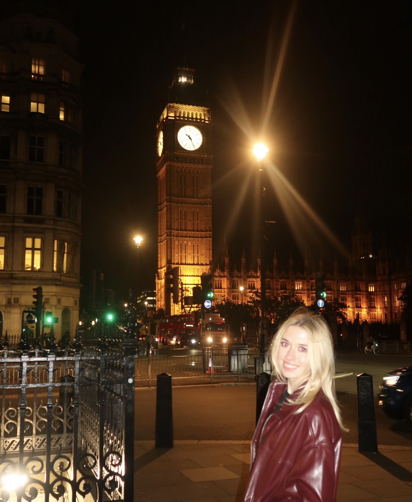
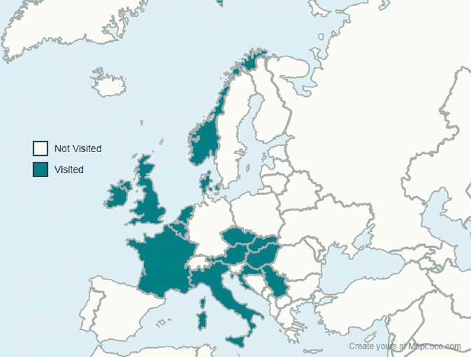
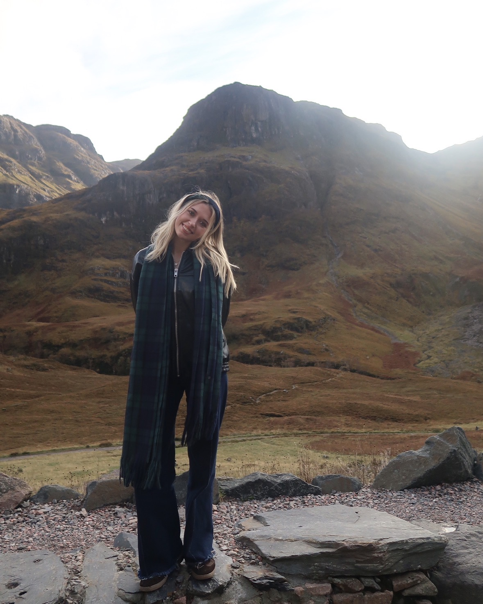
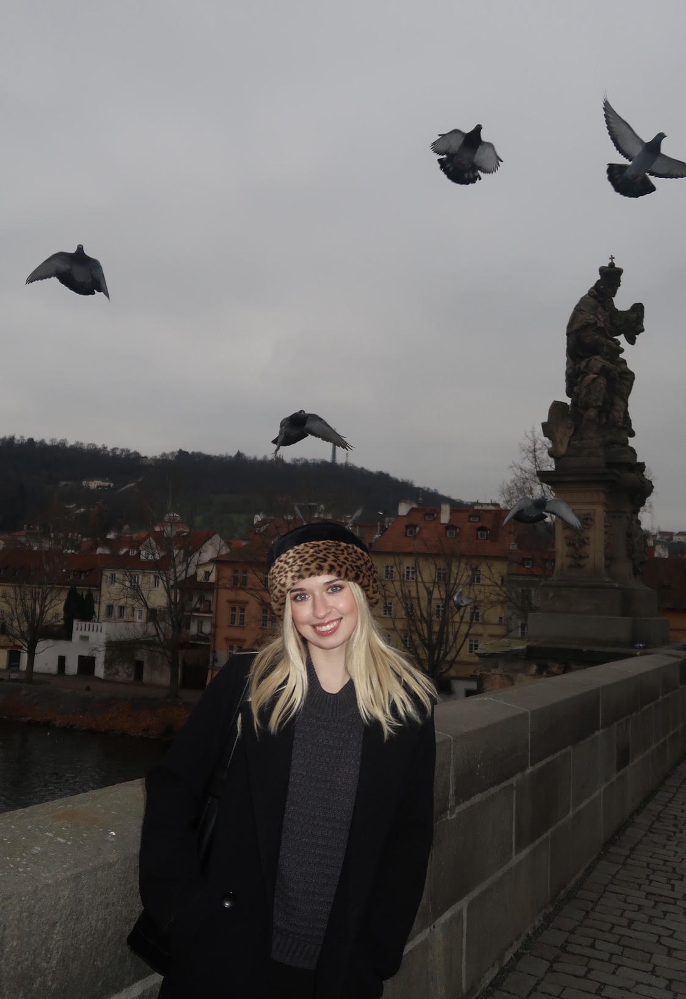

Block I (Weeks 1–6)

My first 6 weeks in Europe! Adjusting to my new life and my first trips, which included Paris and Denmark!
View Block INew places. New perspectives.
Hi! I'm Melayna, a student at Arizona State Univeristy. In Fall 2025 I had the oppertunity to spend 18 weeks living in London. During my study abroad experience, I had the opportunity to travel to 16 countries and explore more than 30 cities. Each destination gave me the chance to experience new cultures, meet different people, try new foods, and see places I had only ever heard about before. From major cities and famous landmarks to smaller towns and unexpected adventures, every trip became a unique part of my experience abroad.


My first 6 weeks in Europe! Adjusting to my new life and my first trips, which included Paris and Denmark!
View Block I
New week, new country! Constantly traveling to new places!
View Block II
Christmas Markets and saying my final goodbyes!
View Block III